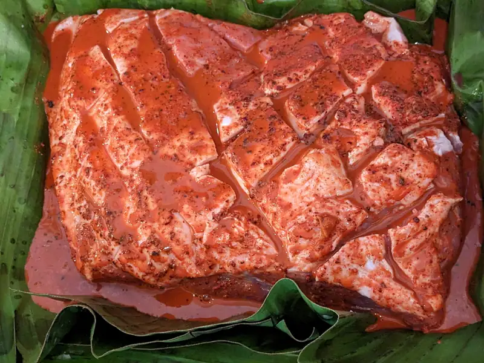

Cochinita Pibil 2023

{kind=link}
Ya hemos hablado del dichoso puerco en achiote un par de veces antes, no?
Bueno, pues la receta básica no cambia; a veces con vinagre, a veces sin vinagre. Con diferentes cítricos, con eso de que aca no se consiguen naranjas agrias/ácidas como las que se supone que se deben usar, pues bueno, uno se ve en la necesidad de ajustar a los ingredientes disponibles.
Ingredientes
- 3kg de carne de puerco (en este caso una paleta/hombro)
- 1 paquete de achiote
- Jugo de 6 naranjas medianas
- Jugo de 2 limones
- 1/4 taza de vinagre de manzana
- 1 cucharada de sal, o mas bien, al gusto
- Hojas de plátano
Procedimiento
- Disuelve el achiote y la sal en los líquidos.
- Lava y tuesta las hojas de plátano para suavizarlas.
- Embarra el puerco y envuelve en las hojas de plátano.
- En esta etapa se puede dejar marinando hasta durante un día, o se puede ir directo al horno.
- Hornea a 275° F durante 4 a 6 horas hasta que la carne esté suave al atravezarla con un picadientes/brocheta de bambú.
- En el caso de que sea un trozo como el de la foto, destapa y coloca bajo la salamandra para dorar la grasa.